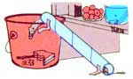
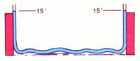
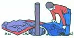

Mother's Down-Home
Tips from Dorothy Ruef on building a more humane mousetrap, John Berninger on keeping moles out of the garden, Bob Zahirsky on buttering corn, Carolyn Velvick on grain-drying, Elnora Borrous on boiling eggs, Donal Peterson onloosening eggs from the skillet, Al Jensen, on keeping sauerkraut from molding, Gnee Zins on making a water level, Ivan Nichols on setting a post in a posthole, Don Stewart on a simple use for soap slivers, Janet Guyett on transplanting strawberries, Virginia Hansen on preserving eggs, Sims Potthoff on cleaning old guitar strings, Guido and Brenda Dnzler on using water from steamed vegetables, Lou Hughbaanks on fence mending.
By the Mother Earth News editors
March/April 1978
Find a better mousetrap? No. But Dorothy Ruef of Gualala, California at least has a more humane one. Take a smooth-sided galvanized or plastic bucket-at least a foot deep-and bait it with tempting, aromatic morsels (such as bacon, cheese, or an old peanut butter sandwich). Next, place the pall someplace where the mice can easily "drop in" to it ... near a popular (with the vermin anyway) shelf or around cupboards that the little rodents seem to frequent. Then (see illustration) tape a cardboard wrapping paper/paper towel tube to the bucket so that it can be used as a stairway by the small pests.
Mice just can't resist the lure of a tunnel to explore, especially when it has an enticing odor at the other end ... but after they traverse the tube and drop into the pail for their treat ... they'll discover-as you will-that mice can't climb out of buckets. You then need only carry your "prize" of cheese-nappers (still in their temporary home) down the road a comfortable distance, dump 'em out, and?surprise!-you've painlessly converted house mice to field mice. Or, it you've the stomach for it, drown the little thieves.
Moles can be as much of a nuisance outdoors as mice are indoors ... and moles were definitely a problem to the rows of peas and corn in John Berninger's garden in Moores Hill, Indiana. After trying just about everything to get rid of the critters, John noticed that the burrowing animals often bumped right into the foot of the mole trap that he had been using (rather unsuccessfully) ... and then just dug around it.
In an effort to take advantage of this "hit and run" activity, John placed sticks in the ground (children love to help with this project) throughout the rows of peas and corn. Sure enough. The moles now hit the sticks, go around 'em, and thereby miss most of the garden fare. John tells us, "They still get some of our plants but we now get most ... and all live happily".
While we're on the subject of drying corn Bob Zahlrsky of Canal Fulton, Ohio has some advice on wetting corn ... wetting those golden ears with butter, that is. After cooking a batch of the grain, pour the still-hot water off into a heat resistant quart (or thereabouts) jar. Fill the container about half full. Then drop in 1/4 stick of butter ... which should proceed to melt and rise to the surface of the liquid. All that's left is to dip those ears of sweet corn right into the jar for a tasty, even application of butter ... with no waste!
If John ever gets that corn past the moles and out of the ground he's sure to be interested in this novel grain-drying method that a neighbor in Caldwell, Idaho shared with Carolyn Velvick. First make a bag-about the size of a pillow. case-from any porous cloth (such as muslin).
A flour sack is ready-made for the purpose, Leave one end of the bag open and stitch a seam lengthwise down its center ... thus dividing the sack into two open-at-one-end compartments. Then simply fill each section with corn cut from the cob and baste or pin shut the open end of both compartments. Hang the bag on the clothesline, making sure to bring the sack of corn in out of the damp night air each evening. And-in the morning always shake the bag to loosen any kernels that might have stuck together before hanging it out again. The corn should be completely dry in two to four days.
When boiling eggs, Elnora Burrous of Galeton, Pennsylvania always adds a bit of vinegar to the water. That way-if the eggs do crack-they'll still remain in their shells ... instead of leaking out into the water. Even when preparing poached eggs Elnora puts 1/4 teaspoon of white vinegar In the cooking water so the eggs will keep their shape and not run all over the place (or plate).
Another "good egg" tip comes from Donald R. Peterson of South Lake Tahoe, California. If your fried hen fruit sticks to the pan and/or the yolks break when you flip 'em ... try adding an ounce of water to the skillet as soon as the eggs' first side has just cooked to your taste. Then cover the pan with a lid and let the resulting steam [1] cook the "sunny" sides and [2] unstick the eggs. Sounds delicious!
MOTHER NO. 42 (you may recall) offered a method for skimming mold from sauerkraut. "That's a good idea," comments Al Jensen of Kennewick, Washington, "but why have mold in the first place? I simply fill a large plastic bag nearly full of water, tie it closed, and place it over the kraut in the pickling crock. This effectively seals out all the air that can cause mold and, at the same time, provides sufficient weight to keep the kraut packed down."
Since water seeks its own level, hold one end of the hose at the elevation desired, for example 15 feet (see drawing). Add water. The water level at the other end of the hose will then be the same-in this case, 15 feet-as the "original" or filler end, and therefore level. This accurately enables you to level all successive posts, columns, etc., to the same elevation as the first.
Gene uses a 20-foot section of 1/2-inch-diameter clear plastic hose when he tries this trick. The length of hose, however, can be varied with the distance between the objects being leveled as well as their desired height. Plain garden hose, though, could be used with glass or plastic tubes-to make the water level visible -inserted in both ends. (Be sure to get the air bubbles out of the hose before running your levels!)
Another useful construction tip from Gene involves the recycling of old bedsprings. When laying a concrete slab, just wire those bedsprings together and embed them in the cement mix as it's poured. The springs are cheaper and stronger-than standard rebar. And for smaller concrete projects, try substituting old barbed wire-very carefully-for the rebar.
It's a "hole" lot easier-when setting a post into a posthole?to get all that dirt you've just dug out back in the hole if you do as Ivan Nichols of Brownstown, Indiana recommends. Cut the seams on a couple-or more-burlap sacks and spread them out flat by the excavation. Then, as you're digging, dump the dirt on the sacks (layered one on the other for added thickness). When you're ready to fill in around the post pick up the burlap by the two corners farthest from the post, pull those corners up and over towards the post, and roll the earth right back where It came from. The process works faster-like most everything else-with two people.
A wonderfully simple outside wash-up system can be yours for the making. Unstick those old slivers and chips of soap from the various soap dishes around the house and dump the hardly usable sudsers in an old sock. Then tie the soap-filled old woolly to an outdoors faucet and let the gardeners, children, and other "outdoorsy" types in the family grab it with their wet hands and clean up before they traipse inside. Thanks to Don Stewart of Clayton, Indiana for this idea.
A disorderly strawberry patch can be a lot of trouble ... especially when the mother plant sends out so many runners that overcrowding occurs. Janet E. Guyett of St. Marys, West Virginia saves a bit of time when transplanting these extra volunteer berry sets by positioning the surplus new plants over soil filled containers. The runners then take root In the pots, which makes it easy-at a later date-to move them to another location. And to keep the plants from drying out as they root, Janet adds, nestle the pots under the mulch or partially bury them ... and be sure to punch holes in any containers that are non-porous!
Living-with no freezer-in the mountains of central California (Coalinga), Virginia A. Hansen found the weather much too hot to preserve eggs by water glassing them. So she solved the problem another way.
Virginia first hard boils her flock's excess eggs and peels 'am. Next the hen fruit is packed loosely Into hot sterilized jars ... along with half a Jalapeno popper, one tablespoon of mustard seed, and a few rings of onion. (The spices can be changed, of course, to suit your taste.) Then the jars are filled to the top with white vinegar that has been heated to boiling, their lids are secured, and the containers are processed 10 to 15 minutes in a boiling water bath. (The boiling ensures the seal.) Understandably, the longer this pickled produce sits on the shelf-if it makes it that far-the tougher the texture of the eggs ... but the flavor is terrific!
Out in the country, front porch guitar pickers are at a real loss-for music if not words-when their instruments' strings lose all their twang and start to thud. (Especially if the old pocketbook isn't up to financing a new set.) There's not much you can do with the two plain steel strings, but you can take off the four wound (bass) strings, coil 'em together like a garden hose (wrapping the ends of each string around the coil itself), and plop the circle of steel In a pot of boiling water. Keep 'am bubbling for about 10 minutes. By then-according to Sims Potthoff of Amboy, Washington-the boiling will have removed the accumulated dirt that tends to collect in the wound steel. Uncoil the almost-like-new strings, let them dry thoroughly, and-when you replace 'em you'll have also replaced the twang.
"Steaming" vegetables Is a bit more common than boiling guitar strings, fortunately, but it often results in nutrient-rich leftover water going to waste (down the drain). Guido and Brenda Denzler like to pour this extra broth into ice cube trays ... freeze It ... and use the cubes to cool down any too-hot-from-the-stove soup or stew. The Stafford, Texas couple say it's faster than blowing on the steaming dish and far more nutritious as well. Looks a whole lot nicer too!
The grass often looks greener on the other side to horses and cows it seems ... as well as to people. And that's just how the top strand of a fence often gets stretched or broken as the animals reach across for that "greener" grass. Lou Hughbanks of Haysville, Kansas has a solution to this problem that'll both minimize fence mending and cut down on the number of "fence rashes" that you have to treat on your livestock. And he does it all with coil springs.
The springs should be about 1-1/2 Inches In diameter with an overall length of 12 to 18 inches. (Old ones salvaged from junked farm machinery generally work just fine.) Attach one end of a spring to a corner fencepost with, say, a sturdy eyelet hook screwed at least an Inch Into the wood. Then hook the other end to the strand of wire and-wearing gloves!-stretch the wire with fence stretchers to the next corner post or another hefty post down the fence line. (The staples holding the wire to the posts should be driven into the posts with enough room left to form an eye so the wire can pass through without binding.) Secure the other end of the strand to another coil spring that's been hooked to that end post. Two springs should be all you need for up to a quarter mile of fence.
OK. Now it's YOUR turn! We've all come up with some practical, down-home, time-tested solutions to the frustrating little problems that bug us every day. Let's hear YOUR best "horse sense" ideas so we can share 'em and all benefit.
Send your pointers to Down-Home Country Lore, P.O. Box 70, Hendersonville, N.C. 28739, and I'll make sure that the most useful of the suggestions I receive will appear in upcoming editions. A one-year subscription-or a one year extension of an existing subscription will then be sent to each contributor whose tip does get printed in this column.-MOTHER.
|
|
 |
 |
|
 |
 |
|